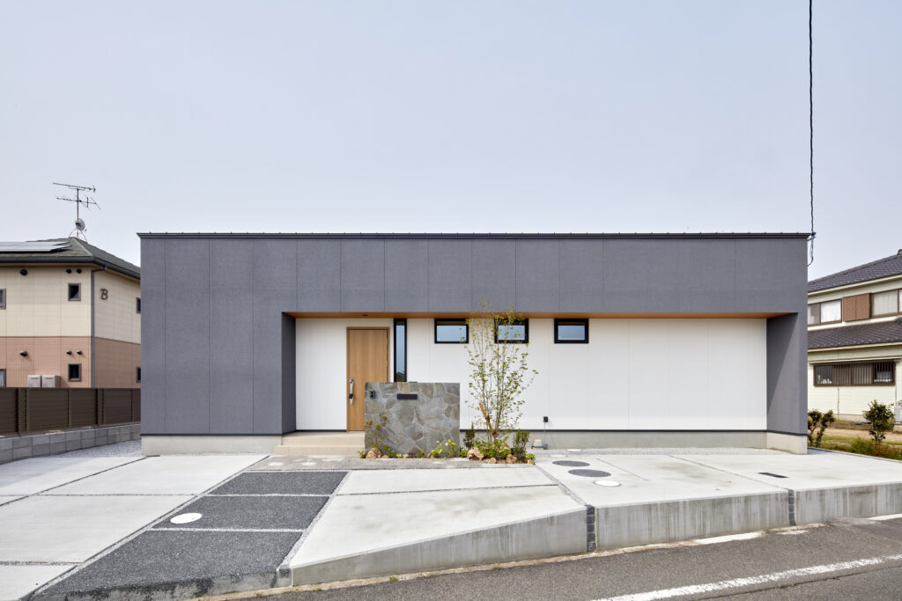

TILOC
憧れの平屋に暮らす
3つのデザインタイプと5つのスタイルを組み合わせた、
15通りの平屋住宅であなたの理想を実現！
近年、平屋住宅の人気の高まりとともに「まんてん.」では、新しくテイストの違う3つのデザインの平屋住宅をラインアップとして加えました。
2階建てに比べて、どうしてもコスト面で高くなりがちな平屋住宅を、セミオーダーの利点を生かすことで、手の届く価格で実現しました。平屋が大好きな方、予算の都合であきらめていた方。ぜひ一度ご覧ください。
3 TYPE
3つのデザインタイプ
TYPE 01
カリフォルニア
休日を楽しみたい
遊びのある暮らし
TYPE 02
シンプル
シンプルで
飽きのこない暮らし
TYPE 03
和モダン
山の麓で暮らすような
ゆとりのある暮らし
5 STYLE
5つのスタイル
Tstyle
機能的なストレスフリーの暮らしをご提案
Istyle
シンプルに落ち着きのある暮らしのご提案
Lstyle
空間の広がりを感じる暮らしのご提案
Ostyle
中庭を眺めゆったりとした暮らしのご提案
Cstyle
デッキを囲みゆとりある暮らしのご提案

TILOC CALIFORNIA西海岸の開放的な
西海岸の開放的な
ライフスタイルを岡山でも。
海の近くには住めないけど、サーファースタイルを満喫したい♪
休日は気の合う仲間・大好きな家族と。ハンモックで心地良い風に吹かれながらお昼寝も、ウッドデッキや庭でゆっくり♪
※写真は施工事例です。実際の建物とは異なります。

TILOC SIMPLEシンプルな平屋で
シンプルな平屋で
ストレスフリーな暮らしを。
暮らしのすべてを同一階で出来る快適さ♪
忙しい毎日、だからこそシンプルな暮らしを求めるのは必然です。そんなお互いを思いやれる家族の願いを、カタチにしました。
※写真は施工事例です。実際の建物とは異なります。

TILOC 智麓（ちろく）山のふもとで暮らすような
山のふもとで暮らすような
ゆとりのある暮らし。
気候のいい季節には、心地良い風を上手く家の中へ。家のどこにいても、快適に過ごせるように。
コンパクトにまとめている平屋ですが、プライベートスペースは大事にできる暮らし方を。
※写真は施工事例です。実際の建物とは異なります。